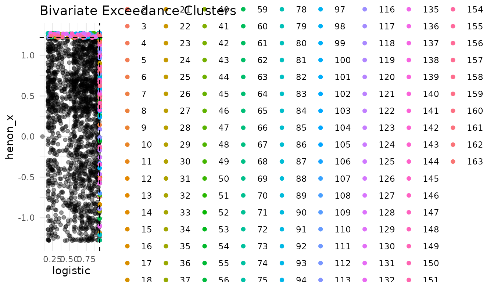
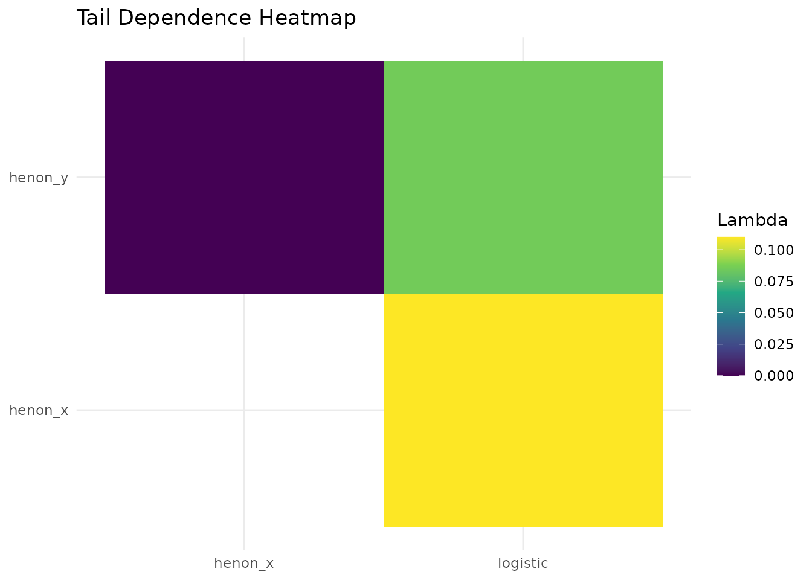

Multivariate Extreme Value Analysis
Diogo Ribeiro
2026-09-18
Source:vignettes/multivariate-analysis.Rmd
multivariate-analysis.RmdIntroduction
This vignette demonstrates the multivariate tools of chaoticds using simulated logistic and H'enon maps.
library(chaoticds)
set.seed(123)
logistic <- simulate_logistic_map(2000, r = 3.8, x0 = 0.1)
henon <- simulate_henon_map(2000)
series <- data.frame(logistic = logistic,
henon_x = henon$x,
henon_y = henon$y)
thresholds <- apply(series, 2, quantile, probs = 0.95)
extremal_index_multivariate(series, thresholds, run_length = 3)
#> [1] 0.8862847
plot_exceedance_clusters(series[,1:2], thresholds[1:2])
tail_dependence_heatmap(series)
Multivariate analysis helps understand simultaneous extreme behaviour in chaotic systems.